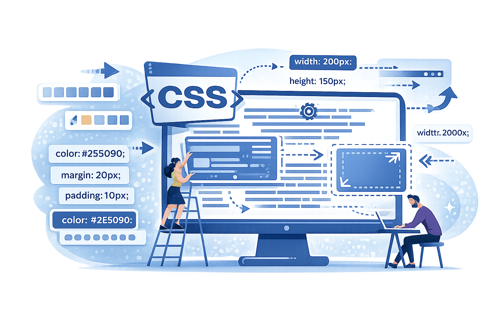
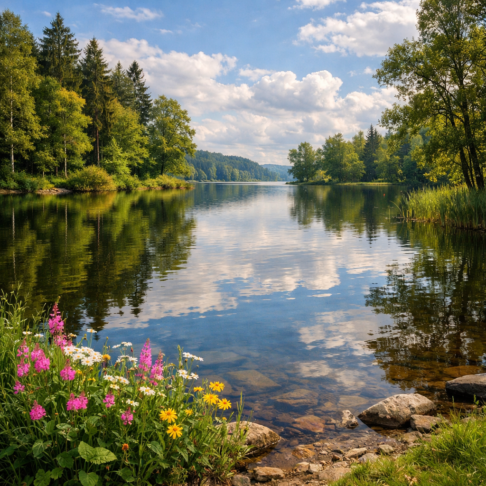
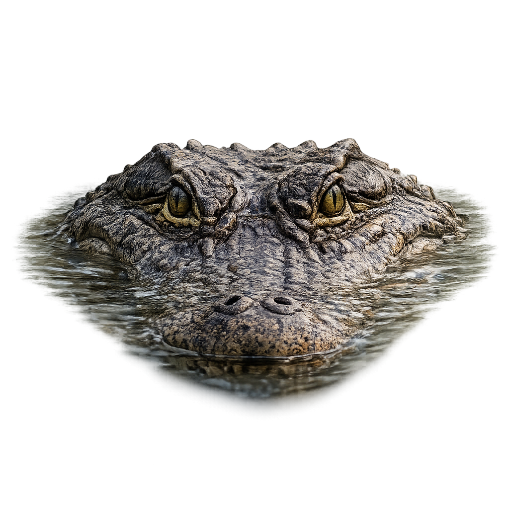
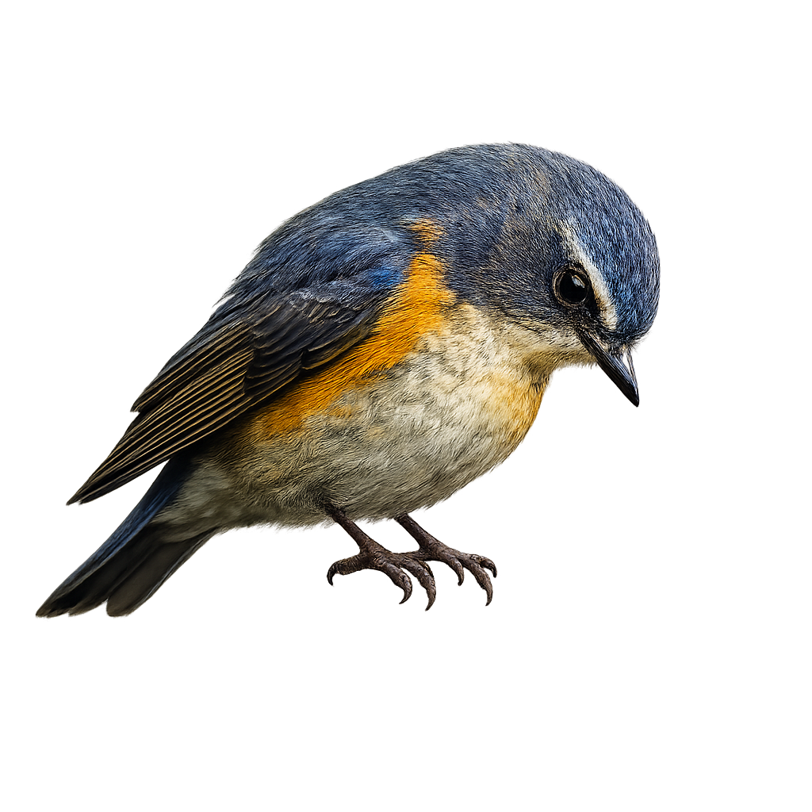

My CSS Selectors and Layout Practice
Hello!
This page was developed as a practice exercise to explore how CSS selectors, positioning techniques, and layout decisions influence the structure of a web page. It is part of my learning process in HTML and CSS, where I focus on understanding how styles can organize content, improve readability, and create visually balanced layouts.
The purpose of this page is not to build a polished or final website, but to experiment, test ideas, and strengthen my foundation in CSS concepts through hands-on practice.
About This Practice
In this exercise, the main focus is learning how to control layout using CSS. Selecting elements accurately and positioning them properly allows content to be displayed in a clear, logical, and visually organized way.
This practice helps me understand how styling decisions affect how users perceive, read, and interact with a web page.
Why CSS Selectors Matter
CSS selectors make it possible to apply styles to specific elements without affecting the entire page. They help create organized, efficient, and reusable styling rules.
With selectors, I can:
- Target elements precisely
- Apply styles consistently
- Group related elements
- Improve readability and maintenance of the code

Concepts Explored
- CSS selectors and specificity
- Classes and IDs
- Grouped and combined selectors
- Element positioning and layout structure
- Pseudo-classes for interaction and state changes
Visualizing CSS in Practice
CSS plays an important role in transforming plain content into a visually structured page. Through layout control, spacing, and alignment, it becomes possible to guide the user’s attention and improve the overall experience.
Learning these concepts helps me understand CSS not just as a styling language, but as a powerful tool for structure and communication.
Image Positioning Practice:
Example 1 – Centered Image
In this example, the image should be positioned in the center of the page.
The goal is to practice aligning an image horizontally and vertically in relation to the page or a container.
This example helps me understand how alignment affects layout, how centered elements draw user attention, and how containers influence image positioning.

Example 2 – Image Aligned to the Left with Text
In this example, the image should appear on the left side, with text flowing next to it on the right.
This layout is commonly used in articles, blogs, and informational pages.
This practice helps me learn how to align images next to text, how spacing affects readability, and how layout choices impact content flow.
Example 3 – Image Aligned to the Right

In this example, the image should be placed on the right side of the page, with text on the left.
The objective is to explore how changing alignment alters the visual hierarchy and balance of the page.
This example allows me to experiment with visual symmetry and contrast, different layout compositions, and user reading patterns.
Example 4 – Image Inside a Box or Card
In this example, the image should be placed inside a box or card-like section.
The goal is to practice positioning images within a container and controlling spacing around them.
This exercise helps reinforce the relationship between images and containers, how padding and margins affect layout, and how images behave inside structured sections.

Example 5 – Overlapping Images
In this example, multiple images are intentionally placed on top of each other.
The goal is to practice image overlapping using CSS positioning and stacking order.
This exercise helps me understand how position and z-index
work together, how elements are layered on the page, and how overlapping visuals
can be used to create depth, focus, and more dynamic layouts.



Note:
These examples are meant to be styled using different CSS positioning and layout techniques. The goal is to experiment, test variations, and observe how each positioning choice changes the overall structure of the page.
Practicing image positioning helps build confidence in layout design and strengthens my understanding of CSS as a tool for visual organization.